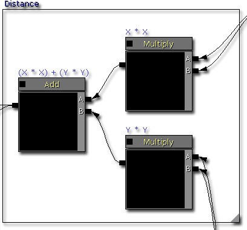
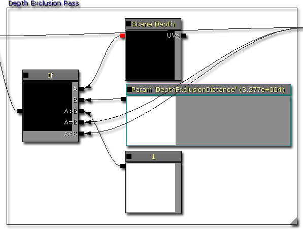
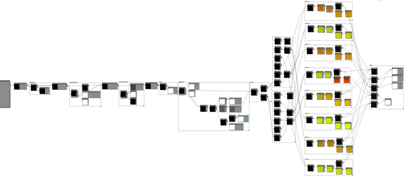
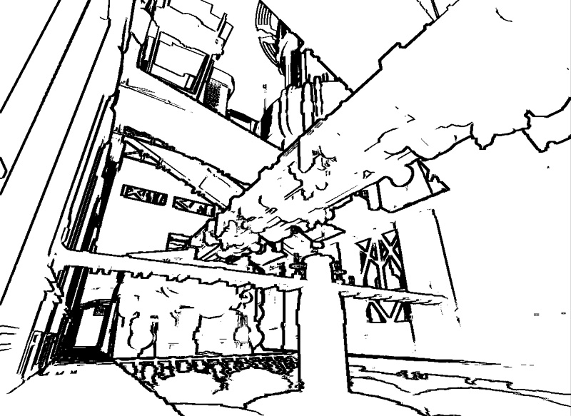
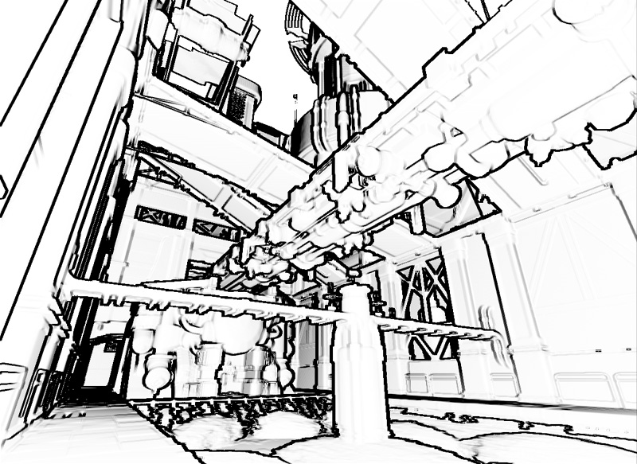
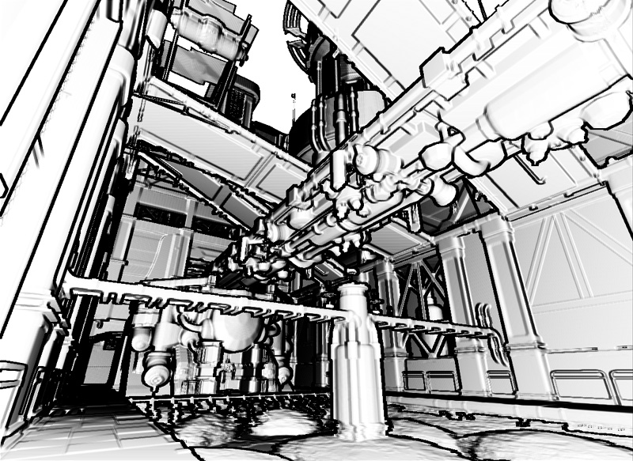
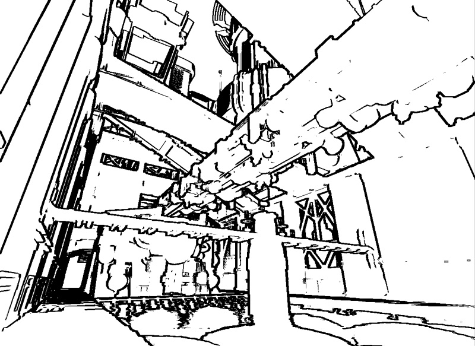
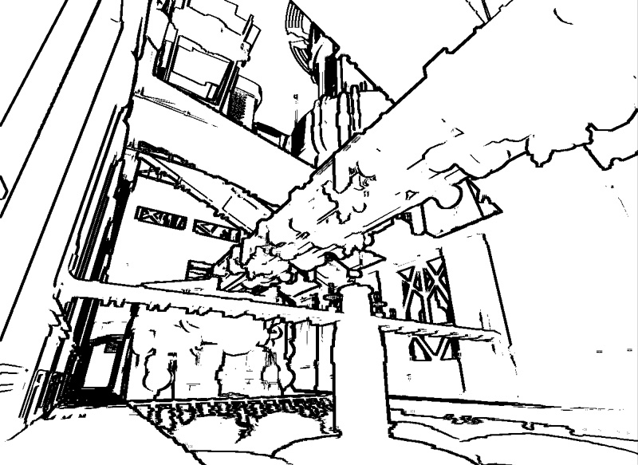

UDN
Search public documentation:
DevelopmentKitGemsSobelEdgeDetectionCH
English Translation
日本語訳
한국어
Interested in the Unreal Engine?
Visit the Unreal Technology site.
Looking for jobs and company info?
Check out the Epic games site.
Questions about support via UDN?
Contact the UDN Staff
日本語訳
한국어
Interested in the Unreal Engine?
Visit the Unreal Technology site.
Looking for jobs and company info?
Check out the Epic games site.
Questions about support via UDN?
Contact the UDN Staff
Sobel 边缘检测后期特效
最后一次测试是在2011年3月份的UDK版本上进行的。
可以与 PC 兼容
概述
材质着色器
计算偏移
因为每个像素需要采样八个周围的像素，所以它需要在对场景深度进行采样的时候偏移 UV 查看角度。因为屏幕坐标依次为从 0 到 1，而不是从 0 到分辨率宽度/高度，所以着色器需要计算相对像素坐标。通过调整偏移位置坐标，可以控制最终边缘大小。要获得最好的效果，应该将 ResolutionX 和 ResolutionY 设置为当前分辨率。
使用偏移
在计算样本偏移坐标后，需要使用这个偏移坐标。要进行这项操作，通过使用 Append 材质节点创建一个 Vector2。然后将最后的 Vector2 添加到相对屏幕位置。这个相对屏幕位置范围在 0.f 和 1.f 之间。这是为了阻止深度查看由于封装而泄露。不需要使屏幕深度标准化，因为具有全部范围的值是很有用的。它适用于所有可行的组合，如下：- UV02 (X = +offset, Y = -offset)
- UV12 (X = +offset, Y = 0)
- UV22 (X = +offset, Y = +offset)
- UV01 (X = 0, Y = -offset)
- UV21 (X = 0, Y = +offset)
- UV00 (X = -offset, Y = -offset)
- UV10 (X = -offset, Y = 0)
- UV20 (X = -offset, Y = +offset)

计算 X 值
计算 x 值的公式为 *0 - UV00 - (UV01 * 2) - UV02 + UV20 + (UV21 * 2) + UV22*。
计算 Y 值
计算 y 值的公式为 *0 - UV00 + UV02 - (UV10 * 2) + (UV12 * 2) - UV20 + UV22*。
计算距离平方值
计算距离平方值的公式是 *(X * X) + (Y * Y)*。然后可以使用这个距离平方值检测边缘。
比较距离平方值
在这里进行距离和标量参数之间的比较。在屏幕深度突然发生变化的的时候，距离平方值将会变大。因此，使用一个简单的比较检测哪里是边缘以及哪里不是。
对比度渲染
使用对比度可以增加最大值同时减小最小值。在您需要改善边缘检查的‘鲜明程度’时可以使用它。它对于深度值慢慢分化的斜坡十分有效。
最小强度渲染
即使是在进行对比渲染之后，还是会出现渐变梯度。为了删除渐变梯度，可以将高于某个特定值的像素值设置为 1，其余的值都设置为 0。它会删除所有渐变梯度，但是可能会产生其他失真现象，例如，锯齿现象或大面积的黑色区域。
深度排除渲染
到目前为止，这个着色器可以在穹顶或距离很远的物体上产生失真现象。此外，假设您知道在穹顶内将永远不会出现边缘，那么可以更快地跳过这些像素。
合成渲染
所有渲染完成之后，会产生一个灰度贴��像素。只需将它与将会添加边缘的场景贴图相乘。
大功告成！
点击全屏模式查看着色器。
下面是使用 sobel 边缘后期特效进行渲染的关卡截图。
调整后期特效
禁用合成渲染
禁用合成渲染可以跳过着色器将 sobel 边缘检测的结果与场景样本纹理节点合成这一步骤。可能在非真实渲染中才需要使用它。
禁用最小强度渲染
禁用最小强度渲染可以跳过着色器删除小于输入值的像素值这一步骤。可能在非真实渲染需要向场景中添加更多深度时才需要使用它。
禁用对比度渲染
禁用对比度渲染可以跳过着色器按照指数调整像素值这一步骤。可能在您想要使用未使用的值时需要它，而不是从中点中选取的值。
禁用深度排除渲染
禁用深度排除渲染可以跳过着色器可以跳过那些深度值比输入值大的像素这一步骤。通常情况下，您将需要进行这个渲染，这样穹顶才不会产生失真现象。
调整深度排除距离
调整这个值使您可以跳过那些深度值大于输入值的像素。将这个值设置得过低将会使着色器跳过太多像素，但是设置得太高可能会在其他地方产生失真现象。您需要找到最适合您的场景或游戏美术风格的正确值。
调整对比度强度
调整这个值允许您将像素值从中间点（通常是 0.5f）向外侧进行调整。这样，在值逐渐靠近 0.f 的情况下，这个值将会向这个方向靠拢，同时如果一个值逐渐靠近 1.f，那么这个值将会向这个方向靠拢。
调整最小强度
调整这个值可以使您包括或排除低于这个输入值的像素值。这样，如果您希望得到更加清晰分明的线，那么将最小强度设置为一个较小的值，而在您希望得到较暗的块时增大这个值。
调整环境明暗度
调整这些值使您可以加强或减弱场景的整体亮度/暗度。

调整 sobel 像素偏移
调整这个值使您可以在距离当前像素坐标更远的地方采样像素。这样可以有效地使边缘更加厚重或者轻薄。如何使用
相关主题
结论
下载
- 下载这篇精华文章中使用的内容。(SobelEdgeContent.zip)